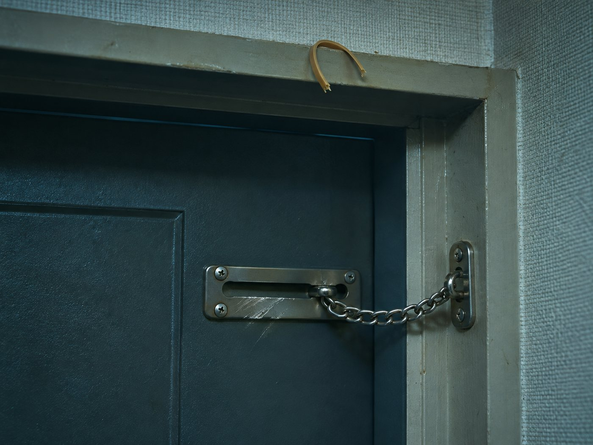
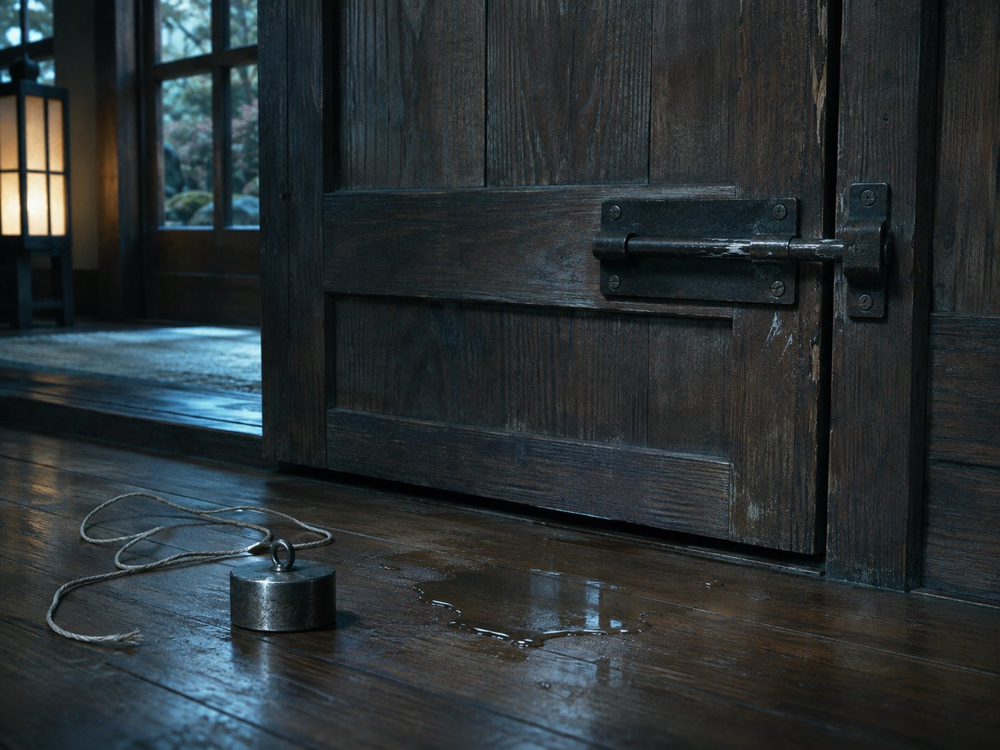
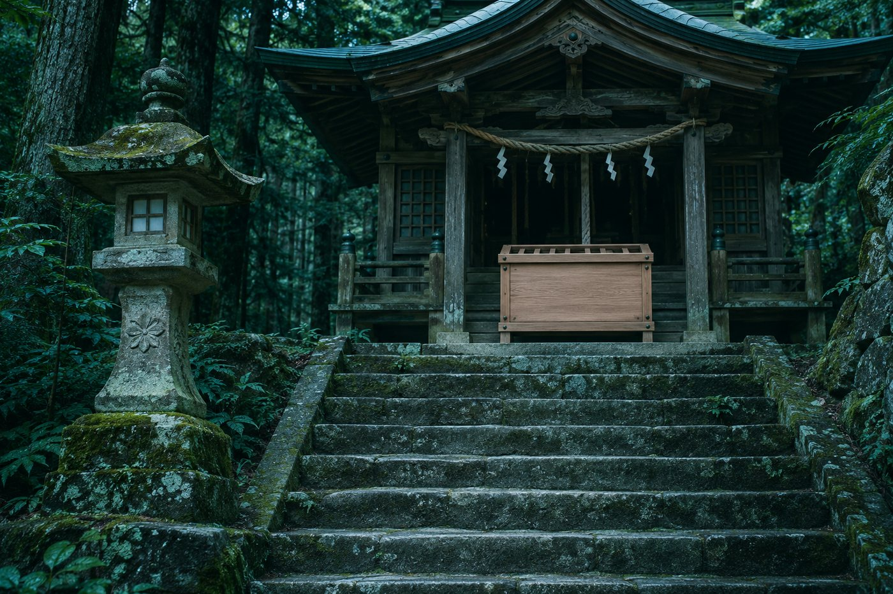

赤い糸の先 ／ 第六話
写真に残らなかったもの
地下保管庫の目録は、背表紙の文字が消えかけていた。水城が番号を読むたびに、係長は少し離れた棚へ歩いた。五つ目の箱を机に置くと、ほかの四つよりも浅い音がした。
最初に開いた発表資料には、扉にチェーンが掛かっていたとある。箱の中から出てきた現場の記録には、その状態がどう作られたかを説明する痕跡の写真が付いていた。

次の箱では、発表に載ったのは窓の状態だけだった。現場で撮られた写真には、水の跡が残っていた。鍵の箱、磁石の箱、もう一件の現場記録でも、説明に使える痕跡は元資料の側にあった。配布版のどこにも、これらの箱の所在は書いていない。

瀬尾は発表用に短くする作業なら珍しくないと言った。係長も同意した。ただ、係長が持ってきた最終報告には、その短い版を参照した跡がいくつもある。水城は新しい一覧を作り、発表の頁の横に、どの箱を開けば元の写真を見られるかを書いた。
昼を過ぎた頃、瀬尾が隣の机から声を掛けた。
「石段の写真、上のほうを見て。手すりはどっちにある？」

「左。説明にもそう書いてあるけど」
瀬尾が配布版を水城に向けた。そちらでは手すりが右に寄っていた。
水城は画面で配布版の左右を反転させた。手すりが重なった。その奥の社も、両脇の木も重なった。
残る三件でも同じだった。説明は元の写真に合う。配布された画像だけが裏返っていた。
「この四枚を出した人が、例の報告の写真も作ったと思うか」
係長の声は地上にいたときより小さかった。水城は指を止めた。反転した時点が分からないのに、別の写真を作った人へ飛ぶわけにはいかない。
「今は、どれも元の版を出せます。あの写真だけ、まだ一枚しかありません」
係長は報告書を開いた。水城は写真の下から、『物品を一か所に集めていた場面』と目録の余白に写した。
「集めていたって、いつ撮ったんでしょう」
「こっちは時点まで書いてあるよ。ほら、『発見時』」
向かいの箱から、瀬尾が一枚抜いた。
瀬尾の指の先には、鉄の輪の写真があった。写真の端で、誰かの手袋が輪を支えていた。